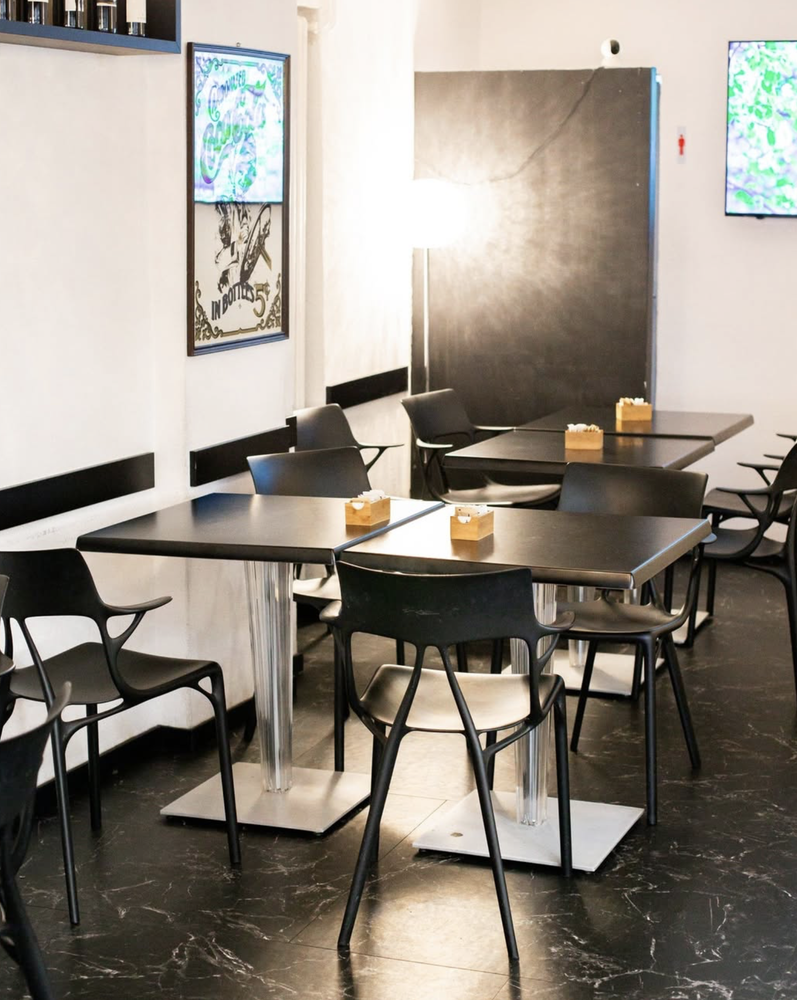

La Nostra Filosofia
L'Esperienza Odeon.
Più che un semplice ristorante, Odeon è un moderno punto d'incontro dove la ricca tradizione del Ristorante Italiano si fonde con l'energia cosmopolita di un bar europeo.
Dal momento in cui apriamo, serviamo caffè artigianali, pranzi gourmet freschi e, più tardi, l'Apéro perfetto. Siamo rinomati per la nostra calda ospitalità—in particolare il nostro servizio stellato, Veronica—e il nostro impegno per i piatti classici.